Para comenzar el análisis de la imagen empezamos leyendo el header para obtener información necesaria para los parámetros iniciales de SExtractor.
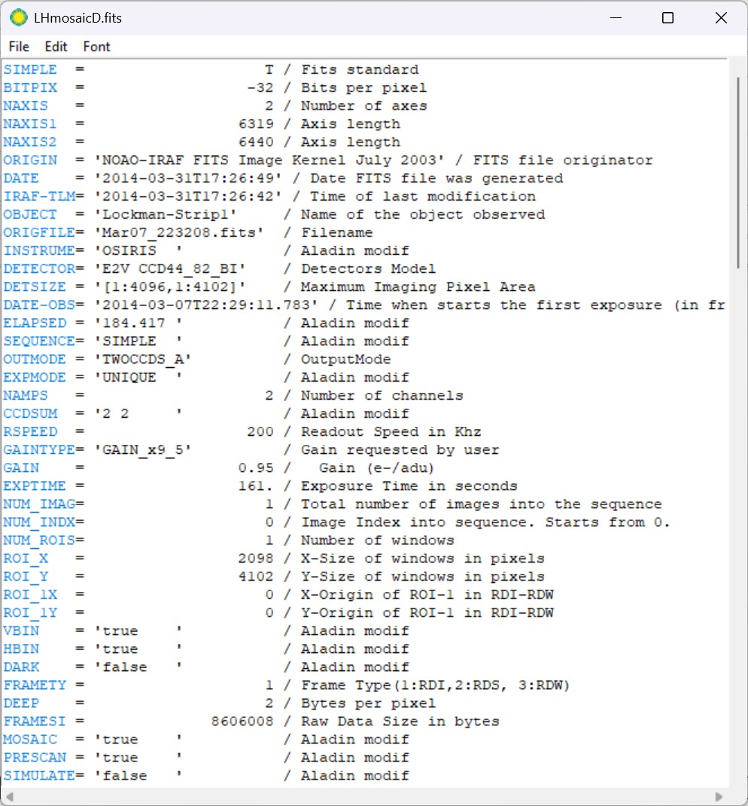
De aquí, e investigando un poco, obtenemos los siguientes parámetros:
| Parámetro | Valor |
|---|---|
NAXIS1 |
$6319$ |
NAXIS2 |
$6440$ |
MAG_ZEROPOINT |
$29.8$ |
GAIN |
$0.95$ |
PIXEL_SCALE |
$0.254$ arcsec/pixel |
SEEING_FWHM |
$1.12$ |
SATUR_LEVEL |
$65536$ |
Con estos datos, tenemos que el FWHM en píxeles es de aproximadamente $4.48$ píxeles, por lo que usaremos gauss_5.0_9x9.conv como filtro. Ahora, inyectamos estos datos a SExtractor para el primer procesamiento de sustracción del BACKGROUND, para ello vamos usar los parámetros de BACK_SIZE y BACK_FILTERSIZE, probando distintos valores.
Haciendo nuestra primera verificación del fondo, SExtractor detecto 24170 objetos y extrajo 21500, ahora verifiquemos las imagenes de chequeo que le pedimos a SExtractor.
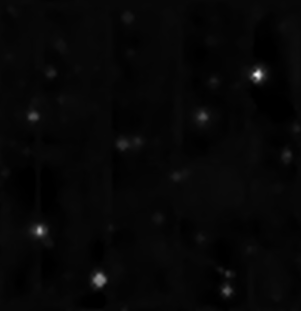
BACKGROUND, podemos ver como este toma partes de algunos objetos, en especial los más saturados. ( BACK_SIZE=64, BACK_FILTERSIZE=3 )
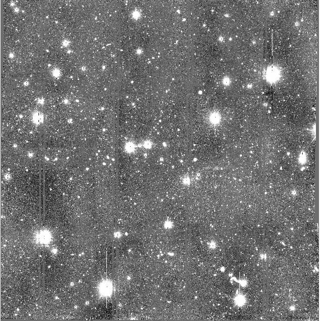
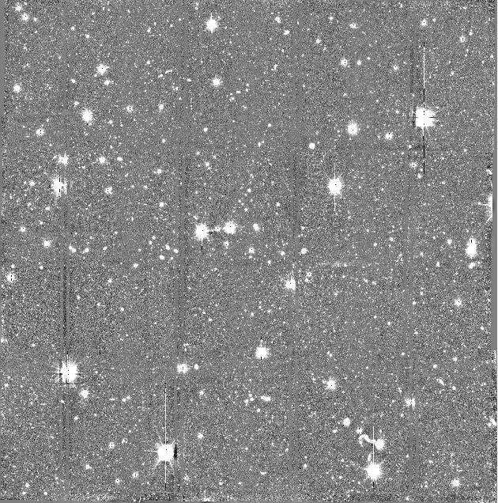
Después de sustraer el fondo de la imagen, parece ser que este queda homogeneo a lo largo de la imagen, a pesar de que esta tomando parte de la luz de algunos objetos. Probemos como se ve con un BACK_SIZE más grande.
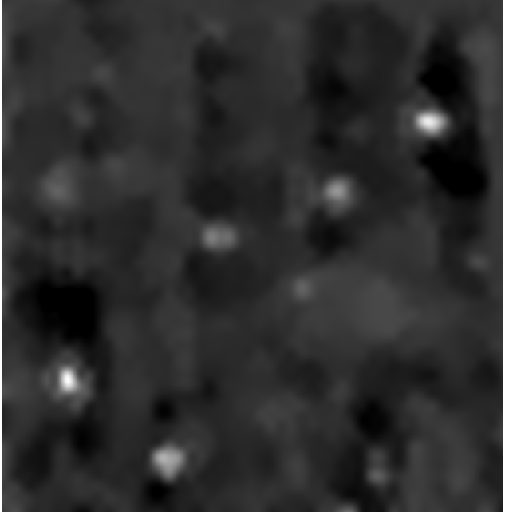
BACKGROUND con un BACK_SIZE de 64 (izq) y 128 (der).
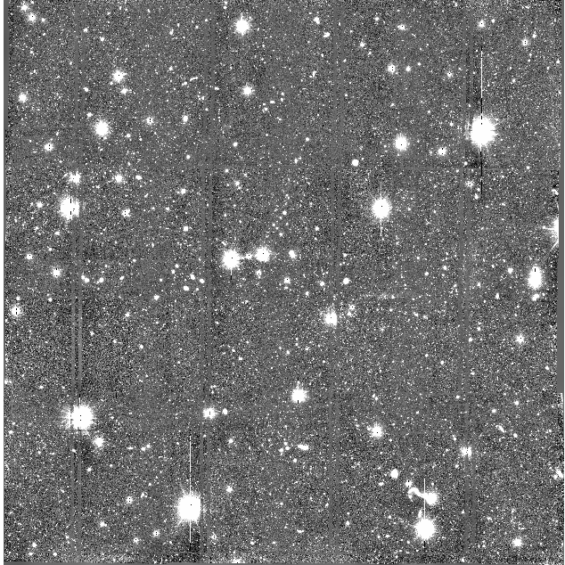
BACK_SIZE de 64 (izq) y imagen con el fondo sustraido usando BACK_SIZE de 128 (der).
Observando la Figura 66 podemos notar una clara diferencia al momento de la sustracción del fondo, además, SExtractor detecto 23845 objetos y extrajo 20996 a teniendo una disminución respeto a BACK_SIZE=64.
Ahora, determinaremos los niveles de umbral para la detección con los parámetro DETECT_THRESH y ANALYSIS_THRESH, para ello vamos a tomar los datos de la imagen de manera invertida y correremos SExtractor para saber si hay detecciones falsas y definir si nuestro nivel de umbral es adecuado.
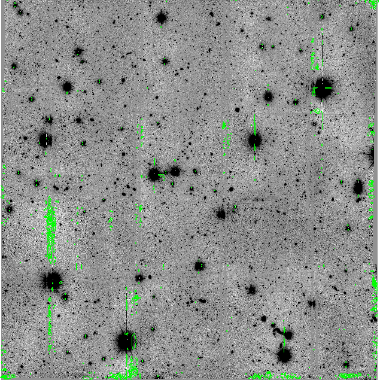
DETECT_THRESH y ANALYSIS_THRESH de 1.5. Con 1344 objetos detectados y 906 extraidos.
Observando la Figura 67, podemos notar que la mayoria de las detecciones espurias que SExtractor detecto estan en las marcas de las uniones de los mosaicos y en algunos patrones generados por estrellas. Podemos aumentar a 2 los valores de umbral y continuar con las configuraciones iniciales.
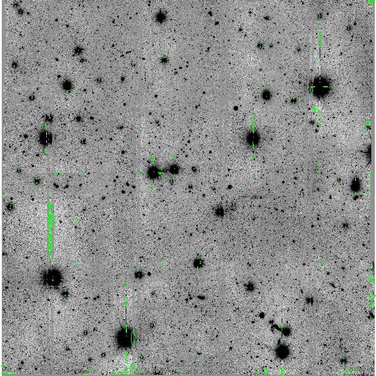
DETECT_MINAREA=5
Ahora, vamos a empezar con el proceso de deblending modificando los valores de DEBLEND_MINCONT con (0.005,0.001,0.05 y 0.01), usando DEBLEND_NTHRESH=32:
| Valor | Objetos detectados | Objetos extraidos |
|---|---|---|
| $0.001$ | $19376$ | $17456$ |
| $0.005$ | $18995$ | $17148$ |
| $0.01$ | $18827$ | $17000$ |
| $0.05$ | $18365$ | $16560$ |
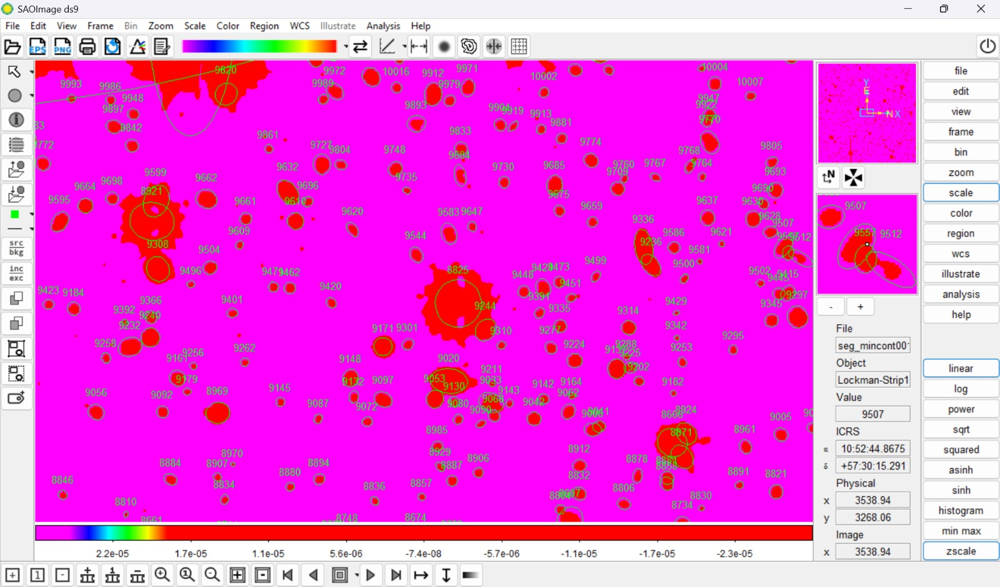
SEGMENTATION con las aperturas fotométricas dibujadas y su valor asignado NUMBER a cada objeto, con un valor de DEBLEND_MINCONT=0.001 (izq) y DEBLEND_MINCONT=0.005 (der).
SEGMENTATION con las aperturas fotométricas dibujadas y su valor asignado NUMBER a cada objeto, con un valor de DEBLEND_MINCONT=0.01 (izq) y DEBLEND_MINCONT=0.05 (der).
En las figuras 69 y 70, podemos notar los cambios que hay en la separación de los objetos al momento de aumentar el valor de DEBLEND_MINCONT, esto puede reafirmarse en la disminución de objetos detectados y extraidos mostrados en la tabla anterior. Para propósitos de este proyecto, tomaremos un valor de DEBLEND_MINCONT=0.005.
Con los parámetros bien definidos obtenemos nuestro catálogo de SExtractor, ahora vamos a verificar posibles outliers y limpiar este catálogo. Este catálogo inicial presenta $18995$ objetos detectados y $17148$ objetos extraidos y, observando las estadísticas, presenta valores de MAG_AUTO=99, FWHM_IMAGE=707 y FLAGS=51. Primero obtenemos nuestro modelo PSF sin modificar el catálogo, y lo ingresamos a PSFEx con el parámetro VIGNET(35,35). Para esto, los filtros que nos da PSFEx fueron
PSF_SIZE 35,35
PSFVAR_DEGREES 2
SAMPLE_FWHMRANGE 2.0,10.0
SAMPLE_VARIABILITY 0.2
SAMPLE_MINSN 20
SAMPLE_MAXELLIP 0.3
Con lo anterior, este es la selección que PSFEx hizo para modelar la PSF:
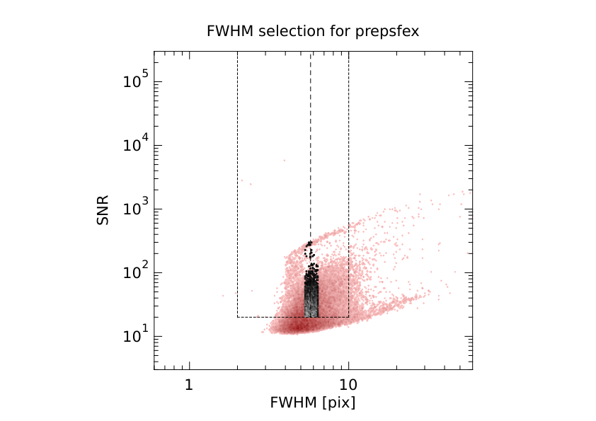
Asimismo, estos son las métricas obtenidas del archivo XML que devuelve PSFEx con información de la PSF:
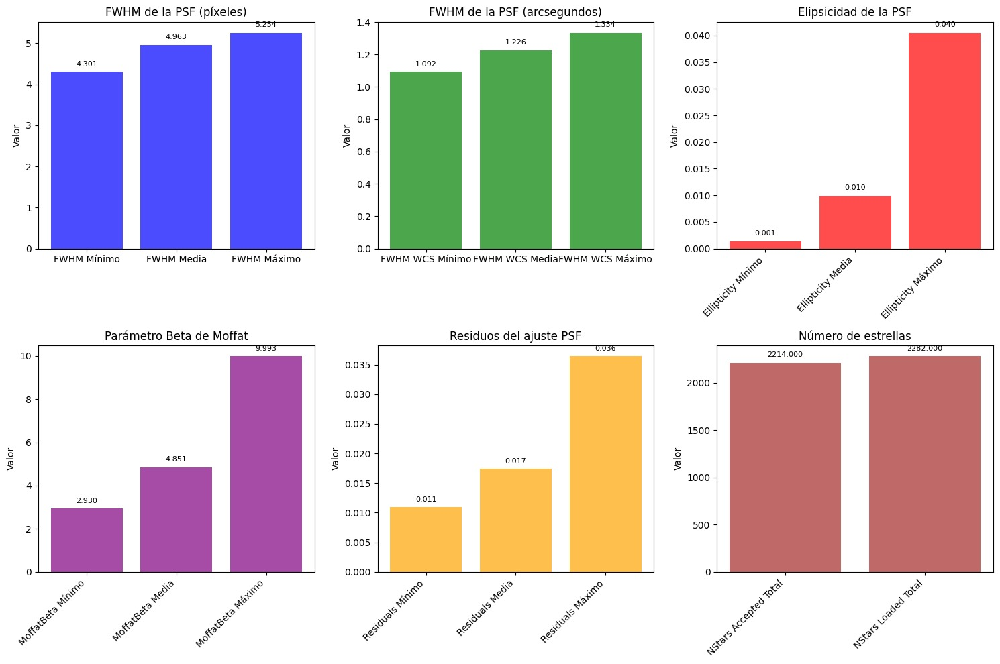
Ahora, vamos a a hacer varias cosas al catálogo antes de meterlo a PSFEx y comparar los resultados de la PSF.
SEGMENTATION vamos a encontrar un conjunto de objetos que cumplan con CLASS_STAR>= 0.95 y con un máximo de FLAGS de 3, estos objetos deberán estar aislados al menos un cierto factor de su FWHM.CLASS_STAR vamos a verificar posibles outliers o mediciones espurias. Con esto, inyectamos este catálogo a PSFEx en donde filtrará el catálogo para hacer su selección y esperamos obtener un mejor modelo de PSF
Aplicando el código de python a nuestro catálogo con 17149 objetos totales obtenemos lo siguiente:
CLASS_STAR > 0.95: 2055 objetos
FLAGS (permitiendo bits <= 3): 2042 objetos
FWHM_IMAGE mediano = 4.48 px)
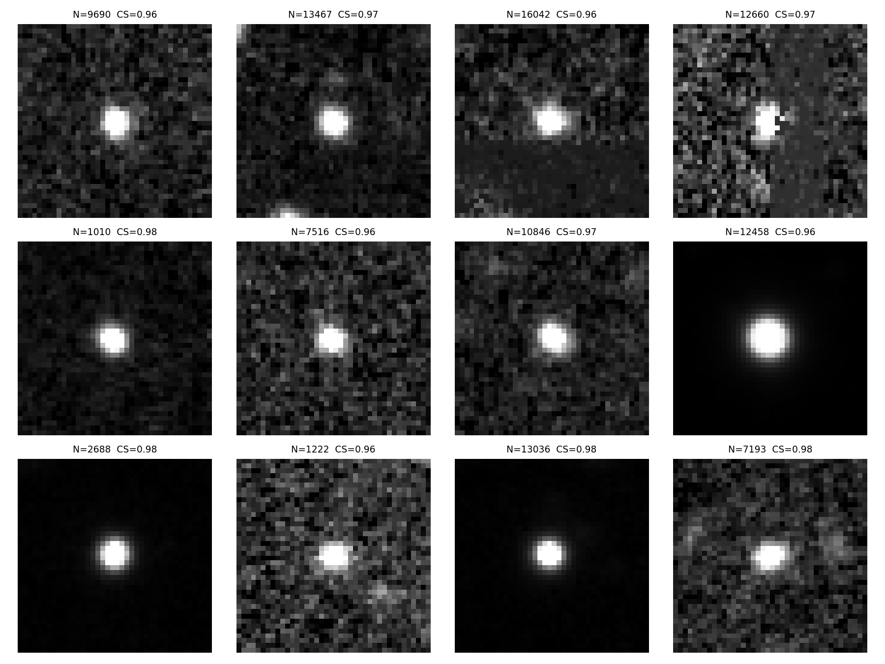
Observando las estadísticas de este catálogo, podemos notar ciertos valores máximos que parecen extraños, como lo es FWHM_IMAGE=51.94 o SNR_WIN=729, observamos este objeto en la imagen:
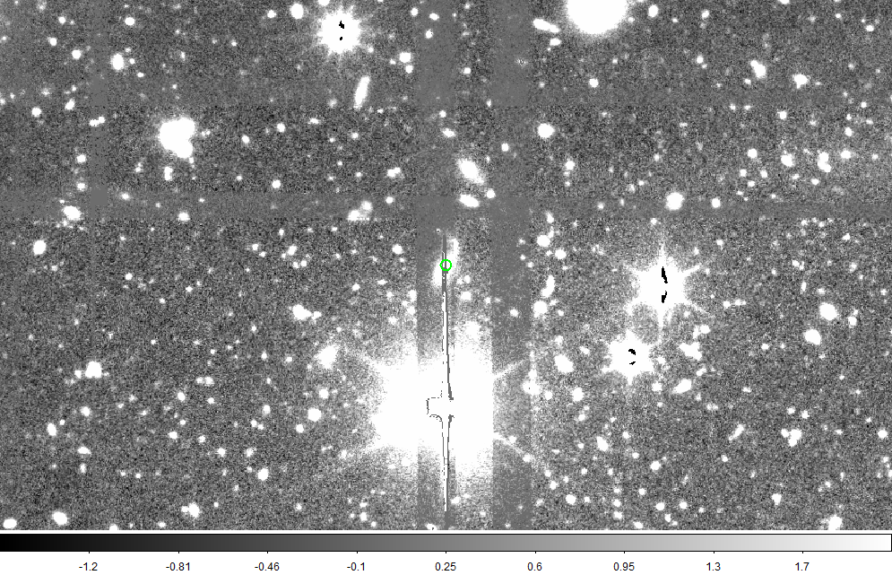
FWHM_IMAGE=51. Podemos notar que esta cubierto por una marca formada por la estrella saturada que esta debajo.
Aquí podemos pensar que quizás pueden haber más detecciones de este estilo, por lo que verificamos los objetos que tengan FWHM_IMAGE>10.
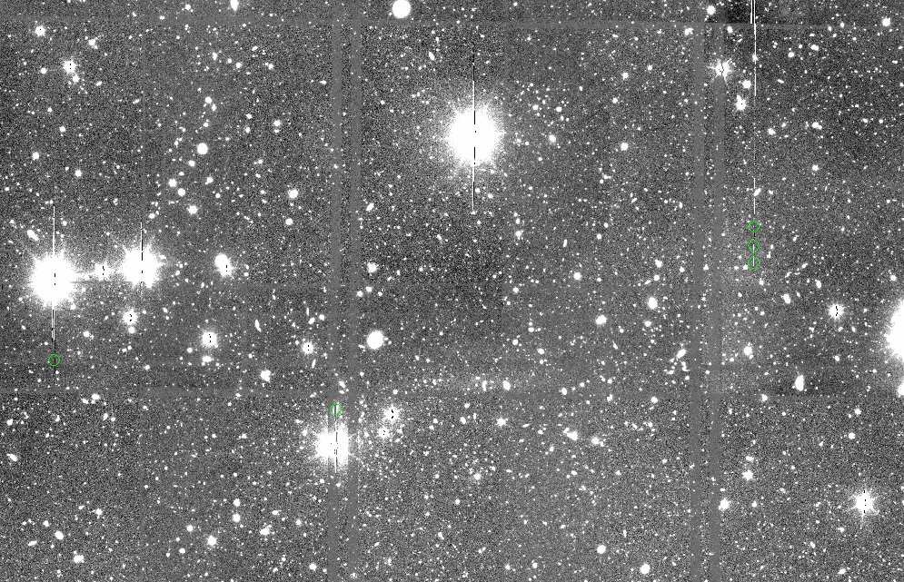
10">FWHM_IMAGE>10. En total fueron 14 objetos, de lo que podemos notar pasa lo mismo que en la Figura 73, estos son "objetos" detectados en las marcas generadas por estrellas saturadas.
Con lo anterior, podemos limpiar nuestro catálogo dejando solo aquellas detecciones con FWHM_IMAGE< 10 , aunque PSFEx ya emplea una de estos criterios para determinar las muestras que empleará para el modelo de PSF. Ahora inyectamos este catálogo a PSFEx usando los mismos criterios que el caso anterior.
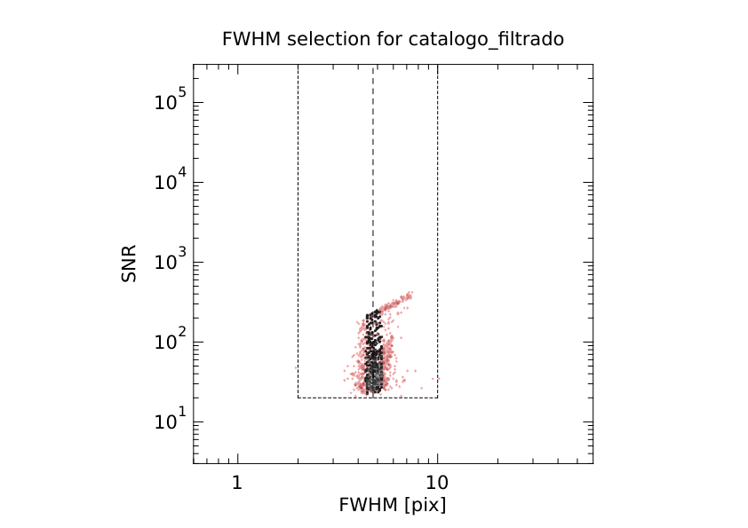
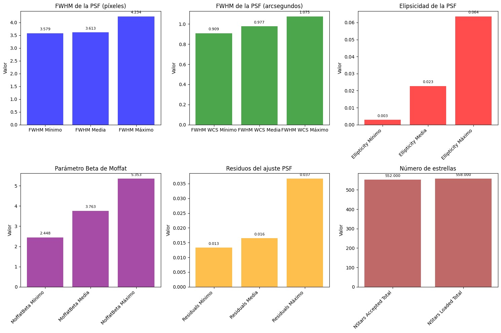
FWHM_IMAGE< 10 .
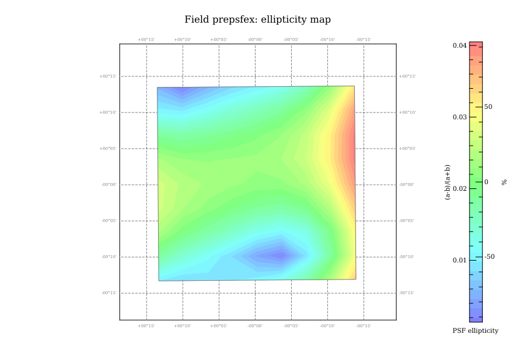
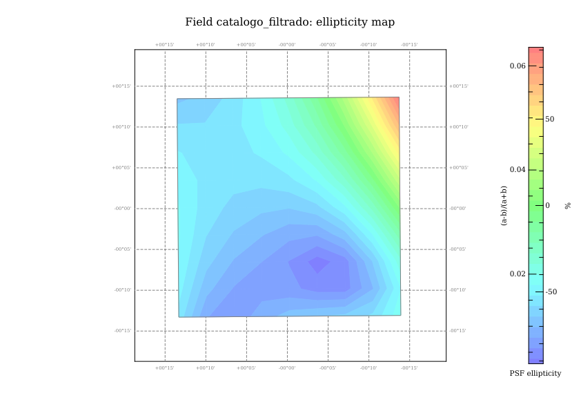
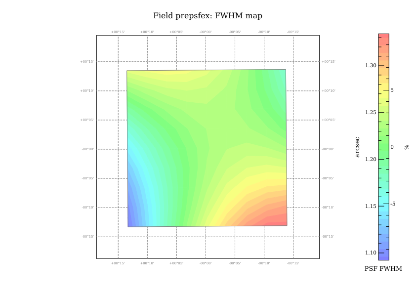
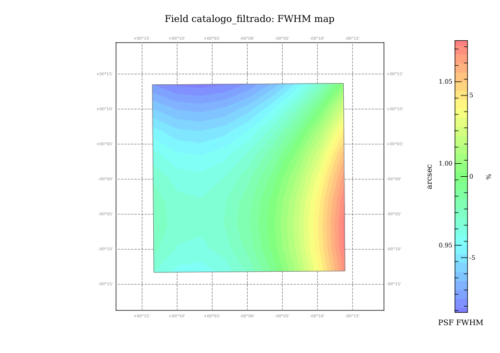
Ahora, empleando nuestro modelo mejorado de PSF, obtendremos una clasificación de fuente puntual y extendida con SPREAD_MODEL, en donde tomaremos como una candidata robusta a estrella aquellos objetos que cumplan con nuestro criterio de clasificación combinado mencionado en secciones anteriores. Además, filtramos el catálogo tomando: FWHM_IMAGE $< 10$, FLAGS $\leq3$ y SNR_WIN $>20$, de donde nuestro catálogo pasa de 17148 a 8688 objetos.
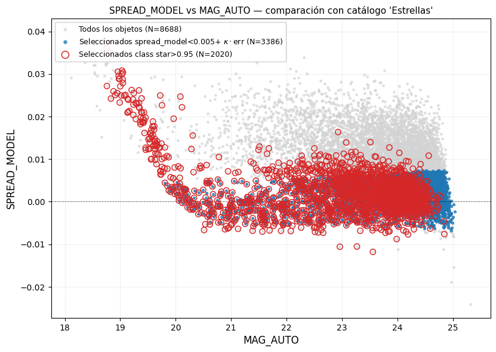
SPREAD_MODEL en función de MAG_AUTO, en donde colocamos los objetos que CLASS_STAR clasificó como fuente puntual.
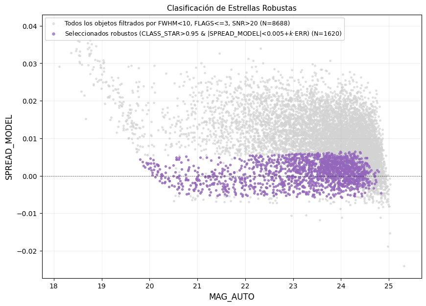
Ahora, vamos a cruzar este catálogo con el de GAIA DR2 para obtener el número de estrellas que coinciden. Para ello vamos a usar TOPCAT, el catálogo de GAIA presenta $436$ objetos, nuestro catálogo coincide con $231$, un $52\%$ de coincidencia con GAIA.